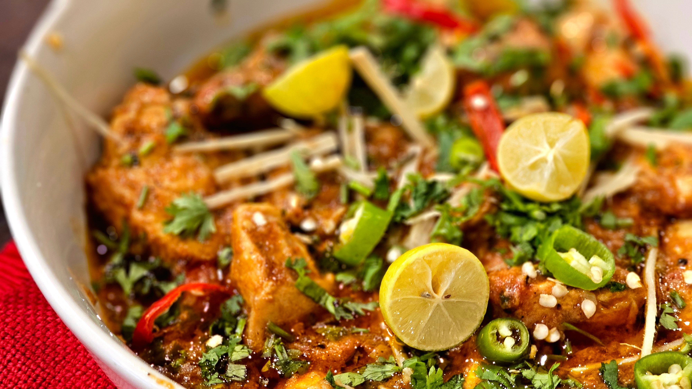

30 MINUTES CHICKEN DINNERS
Why Chicken is Your Best Weeknight Ally
Chicken is a versatile and affordable protein that can be cooked in a variety of ways, making it perfect for quick weeknight dinners. From grilled chicken breasts to one-pan roasted chicken thighs, there are countless recipes that can be prepared in 30 minutes or less. Chicken is also a great source of lean protein, which can help keep you feeling full and satisfied throughout the evening. With the right seasoning and cooking techniques, chicken can be transformed into a delicious and satisfying meal that the whole family will love.
Whether you're looking for a healthy option or a comforting dish, chicken can be adapted to suit your taste preferences. From classic recipes like chicken parmesan and chicken stir-fry to more adventurous dishes like chicken curry and chicken fajitas, there is no shortage of options to choose from. With a little creativity and some simple ingredients, you can create a variety of delicious chicken dinners that will keep your weeknights exciting and stress free.
Recipes
Quick & Easy Chicken Recipes for Busy Weeknights

Chicken Parmesan
A classic Italian-American dish that features breaded chicken cutlets topped with marinara sauce and melted mozzarella cheese. Serve it over pasta or with a side of vegetables for a complete meal.
Time:
30 minutes
Ingredients:
Chicken breasts, breadcrumbs, Parmesan cheese, marinara sauce, mozzarella cheese, eggs, flour, salt, pepper, olive oil

Chili Lime Chicken
A zesty and flavorful dish that combines the heat of chili peppers with the tanginess of lime juice. This recipe is perfect for a quick weeknight dinner and can be served with rice or vegetables.
Time:
20 minutes
Ingredients:
Chicken breasts, chili peppers, lime juice, garlic, ginger, soy sauce, olive oil, salt, pepper
Garlic Chicken
A savory and aromatic dish that features tender chicken cooked in a flavorful garlic-based sauce. This recipe is perfect for a quick weeknight dinner and can be served with rice or vegetables.
Time:
20 minutes
Ingredients:
Chicken breasts, garlic, olive oil, salt, pepper